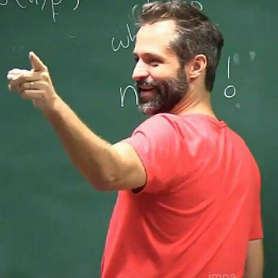

<!DOCTYPE html>
<script>window.texme = { style: 'plain' }</script>
<script src="https://cdn.jsdelivr.net/npm/texme@1.2.2"></script><textarea>
# Rob Morris



IMPA (Instituto de Matemática Pura e Aplicada)<br>
Pesquisador Titular (Full Professor)

Estrada Dona Castorina, 110<br>
Jardim Botânico<br>
Rio de Janeiro, Brasil

office: 310<br>
e-mail: rob(at)impa(dot)br

## About me:

My research focuses on probabilistic combinatorics and related areas. In particular, I’m interested in random graphs and processes, Ramsey theory, monotone cellular automata, combinatorial number theory, and extremal graph theory. Before coming to Rio, I was a Research Fellow of Murray Edwards College, Cambridge, a post-doc in Tel Aviv, Tokyo and at IMPA, a PhD student of Béla Bollobás at the University of Memphis, and an undergraduate at Christ's College, Cambridge.

## Recent papers (since 2020):
  
- P. Balister, B. Bollobás, M. Campos, S. Griffiths, E. Hurley, R. Morris, J. Sahasrabudhe and M. Tiba<br>**Upper bounds for multicolour Ramsey numbers**<br>_J. Amer. Math. Soc._, to appear : [pdf](https://arxiv.org/pdf/2410.17197.pdf) 

- M. Campos, S. Griffiths, R. Morris and J. Sahasrabudhe<br>**An exponential improvement for diagonal Ramsey**<br>_Ann. Math._, to appear : [pdf](https://arxiv.org/pdf/2303.09521.pdf) [videos](https://www.youtube.com/playlist?list=PLo4jXE-LdDTTUDYMaYoWD0Z3ltOQ_XIoc)

- P. Balister, B. Bollobás, R. Morris and P. Smith<br>**Universality for monotone cellular automata**<br>_J. Europ. Math. Soc._, to appear : [pdf](https://arxiv.org/pdf/2203.13806.pdf)

- P. Balister, B. Bollobás, R. Morris and P. Smith<br>**The critical length for growing a droplet**<br>_Mem. Amer. Math. Soc._, 310 (2025), 180pp : [pdf](https://arxiv.org/pdf/2203.13808.pdf)

- R. Morris, W. Samotij and D. Saxton<br>**An asymmetric container lemma and the structure of graphs with no induced 4-cycle**<br>_J. Europ. Math. Soc._, 26 (2024), 1655-1711 : [pdf](https://arxiv.org/pdf/1806.03706.pdf)

- P. Balister, B. Bollobás, R. Morris, J. Sahasrabudhe and M. Tiba<br>**The structure and number of Erdős covering systems**<br>_J. Europ. Math. Soc._, 26 (2024), 75-109 : [pdf](https://arxiv.org/pdf/1904.04806.pdf)

- M. Campos, P. van Hintum, R. Morris and M. Tiba<br>**Towards Hadwiger's conjecture via Bourgain Slicing**<br>_IMRN_, 10 (2024), 8282-8295 : [pdf](https://arxiv.org/pdf/2206.11227.pdf)

- L. Aragão, M. Collares, J.P. Marciano, T. Martins and R. Morris<br>**A lower bound for set-colouring Ramsey numbers**<br>_Random Structures Algorithms_, 64 (2024), 157-169 : [pdf](https://arxiv.org/pdf/2212.06802.pdf)

- P. Balister, B. Bollobás, R. Morris and P. Smith<br>**Subcritical monotone cellular automata**<br>_Random Structures Algorithms_, 64 (2024), 38-61 : [pdf](https://arxiv.org/pdf/2203.01917.pdf)

- B. Bollobás, H. Duminil-Copin, R. Morris and P. Smith<br>**Universality for two-dimensional critical cellular automata**<br>_Proc. London Math. Soc._, 126 (2023), 620-703 : [pdf](https://arxiv.org/pdf/1406.6680.pdf)

- P. Balister, B. Bollobás, R. Morris, J. Sahasrabudhe and M. Tiba<br>**On the Erdős Covering Problem: the density of the uncovered set**<br>_Invent. Math._ 228 (2022), 377–414 : [pdf](https://arxiv.org/pdf/1811.03547.pdf)

- M. Campos, M. Collares, R. Morris, N. Morrison and V. Souza<br>**The typical structure of sets with small sumset**<br>_IMRN_, 2022, 11011–11055 : [pdf](https://arxiv.org/pdf/1910.11324.pdf)

- P. Balister, B. Bollobás, R. Morris, J. Sahasrabudhe and M. Tiba<br>**The Erdős–Selfridge problem with square-free moduli**<br>_Algebra & Number Theory_ 15 (2021), 609-626 : [pdf](https://arxiv.org/pdf/1901.11465.pdf)

- M. Campos, L. Mattos, R. Morris and N. Morrison<br>**On the singularity of random symmetric matrices**<br>_Duke Math. J._, 170 (2021), 881-907 : [pdf](https://arxiv.org/pdf/1904.11478.pdf)

- P. Balister, B. Bollobás, R. Morris, J. Sahasrabudhe and M. Tiba<br>**Flat Littlewood Polynomials Exist**<br>_Ann. Math.,_ 192 (2020), 977-1004 : [pdf](https://arxiv.org/pdf/1907.09464.pdf)

- G. Fiz Pontiveros, S. Griffiths and R. Morris<br>**The triangle-free process and the Ramsey numbers $R(3,k)$**<br>_Mem. Amer. Math. Soc._, 263 (2020), 125pp : [pdf](http://w3.impa.br/~rob/trianglefree_revised.pdf)  Appendix : [pdf](http://w3.impa.br/~rob/trianglefree_z_appendix.pdf)

## Probabilistic combinatorics:

- J. Balogh, R. Morris and W. Samotij<br>**Independent sets in hypergraphs**<br>_J. Amer. Math. Soc._, 28 (2015), 669-709 : [pdf](https://arxiv.org/pdf/1204.6530.pdf)

- R. Morris and D. Saxton<br>**The number of $C_{2k}$-free graphs**<br>_Adv. Math._, 298 (2016), 534-580 : [pdf](https://arxiv.org/pdf/1309.2927.pdf)

- J. Balogh, R. Morris, W. Samotij and L. Warnke<br>**The typical structure of sparse $K_{r+1}$-free graphs**<br>_Trans. Amer. Math Soc._, 368 (2016), 6439-6485 : [pdf](https://arxiv.org/pdf/1307.5967.pdf)

## Graph theory / Ramsey theory:

- G. Fiz Pontiveros, S. Griffiths, R. Morris, D. Saxton and J. Skokan<br>**The Ramsey number of the clique and the hypercube**<br>_J. London Math. Soc._, 89 (2014), 680-702 : [pdf](https://arxiv.org/pdf/1306.0461.pdf)

- P. Allen, J. Böttcher, S. Griffiths, Y. Kohayakawa and R. Morris<br>**The chromatic thresholds of graphs**<br>_Adv. Math._, 235 (2013), 261-295 : [pdf](https://arxiv.org/pdf/1108.1746.pdf)

- N. Alon, J. Balogh, B. Bollobás and R. Morris<br>**The structure of almost all graphs in a hereditary property**<br>_J. Combin. Theory, Ser. B_, 101 (2011), 85-110 : [pdf](https://arxiv.org/pdf/0905.1942.pdf)

## Combinatorial number theory:

- P. Balister, B. Bollobás and R. Morris<br>**The sharp threshold for making squares**<br>_Ann. Math.,_ 188 (2018), 49-143 : [pdf](https://arxiv.org/pdf/1608.03857.pdf)

- N. Alon, J. Balogh, R. Morris and W. Samotij<br>**A refinement of the Cameron-Erdős conjecture**<br>_Proc. London Math. Soc._, 108 (2014), 44-72 : [pdf](https://arxiv.org/pdf/1202.5200.pdf)

- B. Green and R. Morris<br>**Counting sets with small sumset and applications**<br>_Combinatorica_, 36 (2016), 129-159 : [pdf](https://arxiv.org/pdf/1305.3079.pdf)

## Bootstrap percolation:

- I. Hartarsky and R. Morris<br>**The second term for two-neighbour bootstrap percolation in two dimensions**<br>_Trans. Amer. Math Soc._, 372 (2019), 6465-6505 : [pdf](https://arxiv.org/pdf/1806.08931.pdf)

- B. Bollobás, H. Duminil-Copin, R. Morris and P. Smith<br>**The sharp threshold for the Duarte model**<br>_Annals of Probability_, 45 (2017), 4222-4272 : [pdf](https://arxiv.org/pdf/1603.05237.pdf)

- J. Balogh, B. Bollobás, H. Duminil-Copin and R. Morris<br>**The sharp threshold for bootstrap percolation in all dimensions**<br>_Trans. Amer. Math Soc._, 364 (2012), 2667-2701 : [pdf](https://arxiv.org/pdf/1010.3326.pdf)

- J. Balogh, B. Bollobás and R. Morris<br>**Bootstrap percolation in three dimensions**<br>_Annals of Probability_, 37 (2009), 1329-1380 : [pdf](https://arxiv.org/pdf/0806.4485.pdf)

## Probability theory:

- F. Martinelli, R. Morris and C. Toninelli<br>**Universality results for kinetically constrained spin models in two dimensions**<br>_Commun. Math. Phys._, 369 (2019), 761-809 : [pdf](http://w3.impa.br/~rob/KCSM_submitted.pdf)

- D. Ahlberg, S. Griffiths, R. Morris and V. Tassion<br>**Quenched Voronoi percolation**<br>_Adv. Math._, 286 (2016), 889-911 : [pdf](https://arxiv.org/pdf/1501.04075.pdf)

- D. Ahlberg, E. Broman, S. Griffiths and R. Morris<br>**Noise Sensitivity in Continuum Percolation**<br>_Israel J. Math._, 201 (2014), 847-899 : [pdf](https://arxiv.org/pdf/1108.0310.pdf)

- R. Morris<br>**Zero-temperature Glauber dynamics on $\mathbb{Z}^d$**<br>_Prob. Theory Rel. Fields_, 149 (2011), 417-434 : [pdf](https://arxiv.org/pdf/0809.0353.pdf)

[**List of all publications**](https://arxiv.org/a/morris_r_3.html)

[**Google scholar**](https://scholar.google.com/citations?user=38btDWUAAAAJ&hl=en)


## Books / surveys / course notes:

- B. Bollobás and R. Morris<br>**Basic Graph Theory**<br>Cambridge University Press, 2026. [CUP](https://www.cambridge.org/ga/universitypress/subjects/mathematics/discrete-mathematics-information-theory-and-coding/basic-graph-theory?format=HB&isbn=9781009344333#description)
  
- F. Botler, M. Collares, T. Martins, W. Mendonça, R. Morris and G. Mota<br>**Combinatória**<br>XXXIII Colóquio Brasileiro de Matemática (SBM/IMPA): [pdf](https://impa.br/wp-content/uploads/2022/01/33CBM02-eBook.pdf)

- P. Balister, B. Bollobás, R. Morris, J. Sahasrabudhe and M. Tiba<br>**Erdős covering systems**<br>_Acta Mathematica Hungarica_, 161 (2020), 540-549 : [pdf](https://arxiv.org/pdf/2211.01417.pdf)
  
- J. Balogh, R. Morris and W. Samotij<br>**The method of hypergraph containers**<br>Proc. ICM, Rio de Janeiro, 2018 : [pdf](https://arxiv.org/pdf/1801.04584.pdf)

- R. Morris<br>**The method of hypergraph containers**<br>Notes from mini-courses given at a [summer school at USP](https://www.ime.usp.br/~spschool2016/), the [Ramsey DocCourse in Prague](https://iuuk.mff.cuni.cz/events/doccourse/), and the [XVI Escuela de Verano en Matemáticas Discretas](http://eventos.cmm.uchile.cl/discretas2021/): [pdf](http://w3.impa.br/~rob/containers_lectures.pdf)

- R. Morris<br>**Monotone cellular automata**<br>Surveys in Combinatorics 2017, Cambridge University Press : [pdf](http://w3.impa.br/~rob/BCC_survey.pdf)

- R. Morris<br>**Bootstrap percolation and other automata**<br>_European J. Combin._, 66 (2017), 250-263 : [pdf](http://w3.impa.br/~rob/Bootstrap_review.pdf)

- R. Morris and R. Imbuzeiro Oliveira<br>**Extremal and probabilistic combinatorics**<br>XXVII Colóquio Brasileiro de Matemática (SBM/IMPA) : [pdf](https://impa.br/wp-content/uploads/2017/04/28CBM_04.pdf) [videos](https://www.youtube.com/playlist?list=PLo4jXE-LdDTSkmHd3xNGhcObfWXvpwmCL)

## Postdocs:

- Simon Griffiths (2010-13)
- Gonzalo Fiz Pontiveros (2011-13)
- David Saxton (2012-14)
- Paul Smith (2012-14 and 2017-18)
- Nathan Kettle (2013-14)
- Neal Bushaw (2014)
- Mauricio Collares (2015-16)
- Teeradej Kittipassorn (2015-17)
- [Julian](https://www.dpmms.cam.ac.uk/~jdrs2/) Sahasrabudhe (2017-19)
- Natasha Morrison (2018-19)
- [Taísa](http://www.professores.uff.br/tlmartins/) Martins (2018-19)
- [Marius](https://sites.google.com/view/marius-tiba) Tiba (2021-22)

## PhD Students:

- Mauricio Collares (graduated 2015)
- [Daniel](https://sites.google.com/view/dblanquicett/home?authuser=0) Blanquicett (graduated 2019)
- [Walner](https://scholar.google.com/citations?user=-U4Y3K4AAAAJ&hl=en) Mendonça (graduated 2020)
- Luiz Moreira (graduated 2020)
- [Pedro](https://pedrocaraujo.github.io/) Araújo (graduated 2021)
- [Letícia](https://leticiamat.github.io/) Mattos (graduated 2021, Prêmio CAPES de tese)
- [Marcelo](https://marceloscampos.github.io/) Campos (graduated 2023, Prêmio CAPES de tese)
- [Lucas](https://aragaolucas.github.io/) Aragão (graduated 2024)
- Zhifei Yan (graduated 2025)
- [Gabriel](https://gdahia.github.io/) Dahia (expected 2026, joint with Marcelo Campos)
- João Pedro Marciano (expected 2027, joint with Marcelo Campos)
- Rafael Filipe dos Santos (expected 2027)
- Danni Peng (expected 2027)
- Vitoria Aparecida Santos Ferreira (expected 2028)
- Xinbu Cheng (expected 2028)
- Marina Sayuri Yoshidome Vieira (expected 2029)
- Bruno Alejandro Andrades Albornoz (expected 2029)

## Masters Students:

- Pedro Araújo (graduated 2017)
- [Victor](https://souza.id) Souza (graduated 2019)
- Marcelo Campos (graduated 2020)
- Zhifei Yan (graduated 2021)
- João Pedro Marciano (graduated 2023)
- Bruno Alejandro Andrades Albornoz (graduated 2025)
- Monica Martinez Sanchez (expected 2025)
- Joseph Altamirano (expected 2025)
- Henrique Lima Cardoso (expected 2026)

## Awards:

- 2026: Plenary speaker, International Congress of Mathematicians
- 2024: The Leroy P. Steele Prize for Seminal Contribution to Research (AMS)
- 2023: The Elon Lages Lima Prize (SBM)
- 2022: Elected to the Brazilian Academy of Sciences
- 2018: Invited speaker, International Congress of Mathematicians
- 2018: The Delbert Ray Fulkerson Prize (AMS)
- 2017: Prize of the Mathematical Congress of the Americas (MCA)
- 2017: Prize of the Brazilian Mathematical Society (SBM)
- 2016: Prize of the Mathematical Union of Latin America and the Caribbean (UMALCA)
- 2016: The SIAM George Pólya Prize in Combinatorics
- 2015: European Prize in Combinatorics
